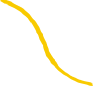
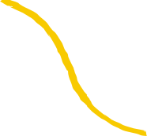

 

Onze missie is om elke leerling van het secundair onderwijs op een begrijpelijke en inclusieve manier kennis te laten maken met de geschiedenis van het vakgebied in de brede zin, aspecten van zijn rijkdom en maatschappelijke relevantie, ongeacht onderwijsvorm of studierichting.
De visie van de Geschiedenis Olympiade is om de leermogelijkheden te maximaliseren voor
alle leerlingen door
gratis expertise aan te bieden via duurzame partnerschappen
met openbare, publiek-private en particuliere instellingen.


Als je tot hier al hebt gescrolled zal je wel interesse hebben in de logowedstrijd. Zin om mee te doen? Klik dan op de onderstaande knop, vul het formulier in, en schrijf je klas in!
InschrijvenIk ben Noah! En ik ben opzoek naar een klas die voor de jaarlijkse Geschiedenis Olympiade een logo kan ontwerpen. Schrijf jullie samen in voor de wedstrijd, en wie weet wordt jullie ontwerp wel gebruikt.